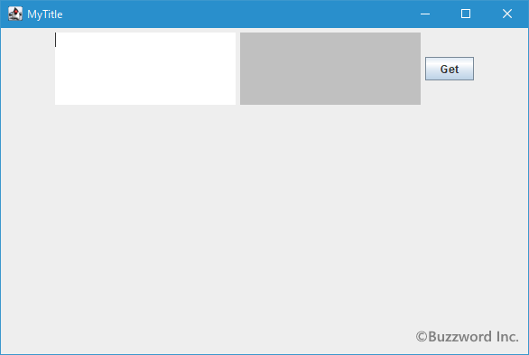
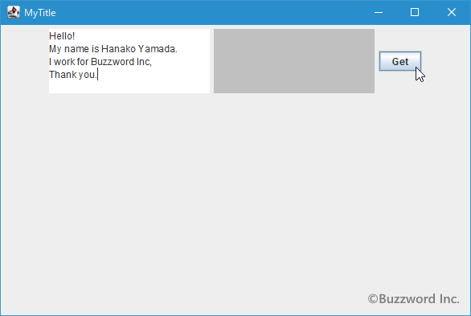
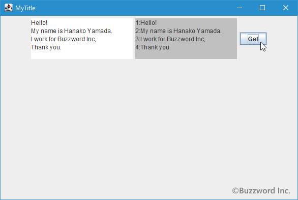
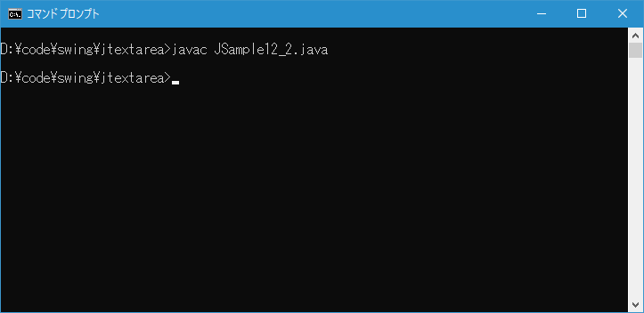
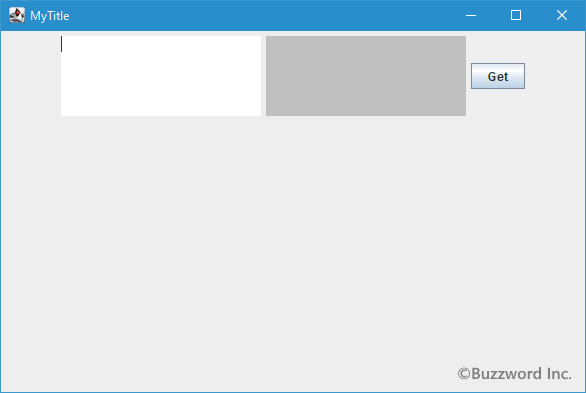
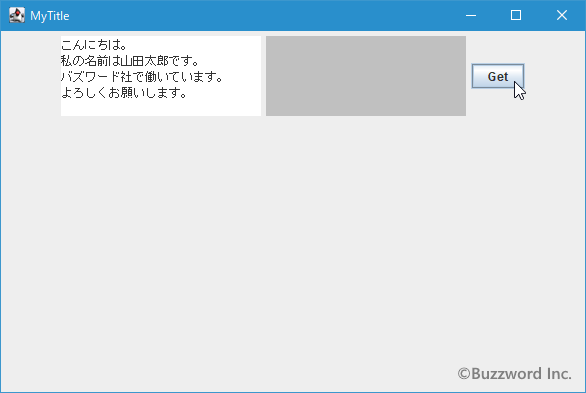
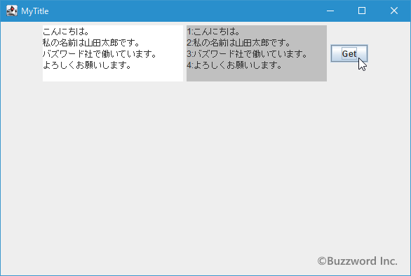

テキストエリアから取得したテキストを1行毎に分割して処理する
テキストエリアに入力されるテキストは複数行になる場合が多いですが、ここではテキストエリアに入力されたテキストを取得し、 1 行毎に分割して処理する方法について解説します。
テキストエリアから取得したテキストを1行ずつ処理する
順番に手順を確認していきます。最初にテキストエリアに入力されたテキストを getText メソッドを使って取得します。( getText メソッドの使い方については「テキストエリアに入力されたテキストを取得する」を参照されてください)。
JTextArea textarea = new JTextArea(); String str = textarea.getText();
取得したテキストには複数の行が含まれています。テキストエリアでは改行を表す文字は ¥n となっていますので、区切り文字として ¥n を指定し取得した値を分割します。
テキストエリアへの値の入力のされかたによっては改行文字として ¥n の代わりに ¥r¥n を入力してしまっている場合があります。その場合は先に ¥r¥n を ¥n に変換しておいて下さい。
テキストを指定した文字で分割して取得するには String クラスで定義されている split メソッドを使います。
public String[] split?(String regex)
この文字列を、指定された正規表現に一致する位置で分割します。
このメソッドの動作は、2つの引数を取るsplitメソッドを、指定された式および制限引数ゼロを指定して呼び出した場合と同じになります。 つまり、結果として得られる配列には後続の空の文字列は含まれません。
たとえば、次の式が指定された場合の、文字列"boo:and:foo"の結果を示します。
正規表現 結果
: { "boo", "and", "foo" }
o { "b", "", ":and:f" }
パラメータ:
regex - 正規表現の区切り
戻り値:
この文字列を指定された正規表現に一致する位置で分割して計算された文字列の配列
例外:
PatternSyntaxException - 正規表現の構文が無効な場合
引数に正規表現を使った区切り文字を指定すると、戻り値として分割された文字列の配列が帰ってきます。
テキストエリアから取得したテキストを ¥n を区切り文字として分割するには次のように記述します。
JTextArea textarea = new JTextArea();
String str = textarea.getText();
String[] strs = str.split("¥n");
折り返しの設定をしている場合、行に含まれる文字列が長いとテキストエリアの幅で折り返しされている場合があります。この場合、表示上折り返しされているだけで実際には改行されているわけではありません。あくまで改行文字を区切りとして1つの行として扱います。
あとは分割された文字列毎に処理を行っていきます。
JTextArea textarea = new JTextArea();
String str = textarea.getText();
String[] strs = str.split("¥n");
for (int i = 0 ; i < strs.length ; i++){
/* ... */
}
サンプルプログラム
それでは簡単なサンプルプログラムを作って試してみます。テキストエディタで次のように記述したあと、 JSample12_1.java という名前で保存します。
import javax.swing.JFrame;
import javax.swing.JTextArea;
import javax.swing.JPanel;
import javax.swing.JButton;
import java.awt.Container;
import java.awt.BorderLayout;
import java.awt.event.ActionListener;
import java.awt.event.ActionEvent;
import java.awt.Color;
class JSample12_1 extends JFrame implements ActionListener{
JTextArea textarea_left;
JTextArea textarea_right;
public static void main(String args[]){
JSample12_1 frame = new JSample12_1("MyTitle");
frame.setVisible(true);
}
JSample12_1(String title){
setTitle(title);
setBounds(100, 100, 600, 400);
setDefaultCloseOperation(JFrame.EXIT_ON_CLOSE);
textarea_left = new JTextArea(5, 20);
textarea_right = new JTextArea(5, 20);
textarea_right.setEditable(false);
textarea_right.setBackground(Color.LIGHT_GRAY);
JButton button = new JButton("Get");
button.addActionListener(this);
JPanel p = new JPanel();
p.add(textarea_left);
p.add(textarea_right);
p.add(button);
Container contentPane = getContentPane();
contentPane.add(p, BorderLayout.CENTER);
}
public void actionPerformed(ActionEvent e){
String str = textarea_left.getText();
String[] strs = str.split("¥n");
StringBuilder sb = new StringBuilder();
for (int i = 0 ; i < strs.length ; i++){
sb.append((i + 1) + ":" + strs[i] + "¥n");
}
textarea_right.setText(new String(sb));
}
}
次のようにコンパイルを行います。
javac JSample12_1.java
コンパイルが終わりましたら実行します。
java JSample12_1
テキストエリアを 2 つ、ボタンを を 1 つ追加しています。

左のテキストエリアにテキストを入力したあとでボタンをクリックすると、入力されたテキストを取得し、 1 行毎に分割して行番号を付けてから右のテキストエリアに表示します。


テキストエリアに入力されたテキストを 1 行毎に分割して処理することができました。
テキストエリアに入力されたテキストの行数を取得する
テキストエリアに入力されたテキストの行数を取得することができます。 JTextArea クラスで定義されている getLineCount メソッドを使います。
public int getLineCount()
領域内に収める行数を返します。
戻り値:
行数> 0
メソッドを実行するとテキストエリアに入力されているテキストの行数を int 型の値で返します。
実際の使い方は次のようになります。
JTextArea? textarea = new JTextArea?(); int linecount = textarea.getLineCount();
テキストエリアに入力されたテキストの行毎のオフセットを取得する
テキストエリアに入力されたテキストに対して、指定した行のオフセット(先頭文字からの文字数)を取得することができます。オフセットは行の最初の文字の前までのものと、行の最後の文字の後までのオフセットをそれぞれ取得できます。
指定した行の開始オフセットを取得するには JTextArea クラスで定義されている getLineStartOffset メソッドを使います。
public int getLineStartOffset?(int line) throws BadLocationException
指定された行の開始オフセットを返します。
パラメータ:
line - 変換対象の行番号>= 0
戻り値:
オフセット>= 0
例外:
BadLocationException - 行が0より小さい場合、またはドキュメントに含まれる行数(getLineCountから報告される)以上である場合にスローされる。
引数にはオフセットを取得する行数を指定します。先頭の行の行数は 0 です。戻り値として指定した行数の最初の文字の前のオフセットを取得します。
指定した行の終了オフセットを取得するには JTextArea クラスで定義されている getLineEndOffset メソッドを使います。
public int getLineEndOffset?(int line) throws BadLocationException
指定された行の終了オフセットを返します。
パラメータ:
line - 行>= 0
戻り値:
オフセット>= 0
例外:
BadLocationException - 行が0より小さい場合、またはドキュメントに含まれる行数(getLineCountから報告される)以上である場合にスローされる。
引数にはオフセットを取得する行数を指定します。先頭の行の行数は 0 です。戻り値として指定した行数の最後の文字の後のオフセットを取得します。
実際の使い方は次のようになります。
JTextArea? textarea = new JTextArea?();
try{
int start = textarea.getLineStartOffset(0);
int end = textarea.getLineEndOffset(0);
}catch(BadLocationException e){
System.out.println("Bad Location Error!");
}
上記では先頭行の開始オフセットと終了オフセットを取得しています。行毎のオフセットを取得する場合、行が改行で終わっている場合は改行文字まで含めて 1 つの行となっていますので注意して下さい。
サンプルプログラム
それでは簡単なサンプルプログラムを作って試してみます。テキストエディタで次のように記述したあと、 JSample12_2.java という名前で保存します。
import javax.swing.JFrame;
import javax.swing.JTextArea;
import javax.swing.JPanel;
import javax.swing.JButton;
import javax.swing.text.BadLocationException;
import java.awt.Container;
import java.awt.BorderLayout;
import java.awt.event.ActionListener;
import java.awt.event.ActionEvent;
import java.awt.Color;
class JSample12_2 extends JFrame implements ActionListener{
JTextArea textarea_left;
JTextArea textarea_right;
public static void main(String args[]){
JSample12_2 frame = new JSample12_2("MyTitle");
frame.setVisible(true);
}
JSample12_2(String title){
setTitle(title);
setBounds(100, 100, 600, 400);
setDefaultCloseOperation(JFrame.EXIT_ON_CLOSE);
textarea_left = new JTextArea(5, 20);
textarea_right = new JTextArea(5, 20);
textarea_right.setEditable(false);
textarea_right.setBackground(Color.LIGHT_GRAY);
JButton button = new JButton("Get");
button.addActionListener(this);
JPanel p = new JPanel();
p.add(textarea_left);
p.add(textarea_right);
p.add(button);
Container contentPane = getContentPane();
contentPane.add(p, BorderLayout.CENTER);
}
public void actionPerformed(ActionEvent e){
int linecount = textarea_left.getLineCount();
try{
StringBuilder sb = new StringBuilder();
for (int i = 0 ; i < linecount ; i++){
int start = textarea_left.getLineStartOffset(i);
int end = textarea_left.getLineEndOffset(i);
sb.append((i + 1) + ":" + textarea_left.getText(start, end - start));
}
textarea_right.setText(new String(sb));
}catch(BadLocationException err){
System.out.println("Bad Location Error!");
}
}
}
次のようにコンパイルを行います。
javac JSample12_2.java

コンパイルが終わりましたら実行します。
java JSample12_2
テキストエリアを 2 つ、ボタンを を 1 つ追加しています。

左のテキストエリアにテキストを入力したあとでボタンをクリックすると、入力されたテキストを取得し、 1 行毎に分割して行番号を付けてから右のテキストエリアに表示します。


テキストエリアに入力されたテキストを 1 行毎に分割して処理することができました。一つ前のサンプルと同じことをしていますが、オフセットを使った方法で行っています。
-- --
テキストエリアに入力されたテキストを取得し、 1 行毎に分割して処理する方法について解説しました。
( Written by Tatsuo Ikura )

著者 / TATSUO IKURA
初心者～中級者の方を対象としたプログラミング方法や開発環境の構築の解説を行うサイトの運営を行っています。